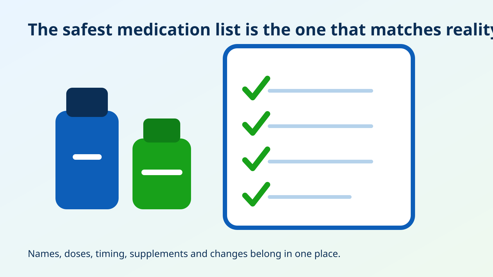
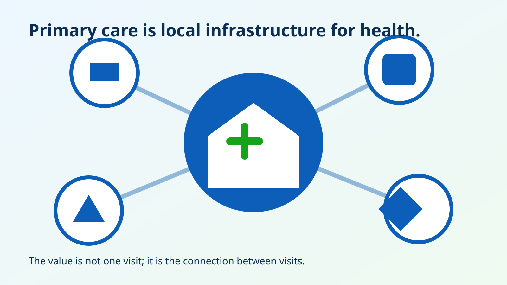

Prepare for an appointment
What to bring, what to ask, and how to leave with a follow-up plan.
Appointment guidePreparation guides, health education, privacy information, and practical links for patients and families.
What to bring, what to ask, and how to leave with a follow-up plan.
Appointment guideAddress, weekday schedule, directions link, and emergency notice.
Location detailsWebsite privacy, the clinic privacy-notice placeholder, nondiscrimination, and accessibility.
Privacy informationGeneral information based on authoritative sources. Articles do not diagnose, prescribe, or replace an individual evaluation.

A data-informed look at how time, cost, transportation, language, and continuity shape access to preventive and primary care in Reseda.
Read article
Preventive care is not a search for every possible disease. It is a disciplined process for finding meaningful risk early while avoiding unnecessary testing.
Read article
A single reading matters, but technique, repetition, home measurements, medication use, and follow-up determine what the number actually means.
Read article
Prediabetes is common, usually silent, and often missed. Screening can identify risk while prevention still has meaningful leverage.
Read article
Language access is not a customer-service extra. It affects history-taking, consent, medication use, follow-up, and patient safety.
Read article
The most useful medication record includes what a patient actually takes—not only what was prescribed in the electronic chart.
Read article
The value of primary care lies in coordination across time: prevention, medication review, testing, referrals, and follow-up.
Read article